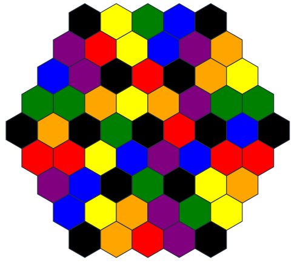
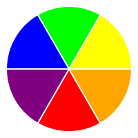

Exoplanet Geographical Information System
Area control with objectives and light engine building. Rune Wars (4-turn cycle, 8 card action hand) meets Terra Mystica (hexes with terraforming) meets Scythe (upgrades, light engine building).
You are AIs owned by rival surveying corporations collecting geospatial data on an inhospitable exoplanet.
You'll need to adapt to the terrain, harvest resources, create more factories and mechs, and deploy scanners to retrieve the most complete picture of the planet to sell to colonists or mining companies.
You win by scoring the most points. The only thing worth points is the number of unique hexes scanned.
Scan the highest number of hexes before the game ends.
You start with one factory, two hexes, two mechs, all with stands of your starting color. You start with 8 alloy.

Hexes are one of 7 colors: red, blue, yellow, purple, green, orange, and black. Some hexes are "special" hexes, marked with ??? (some icon).
A mech can only occupy hexes that are within 1 color of its stand. Within 1 color means exactly matching, or adjacent on the color wheel.
Special hexes require an exact color match, but produce an extra alloy when quarried.
No color is adjacent to black on the color wheel. This means black hexes cannot be friendly and must be terraformed.

TBD - expansion lol
You have scanners, mechs, factories in your color. There are stands of every color. Everyone can gather alloy. There are, in some vague sense, objective tokens. There are no piece limits.
Placed with the scan action to scan 1 or more hexes. Scanners are not units, do not go on hexes, and cannot be destroyed. Placed without stand (really, just place any stand under them, because they'll fall over without it). Cannot be moved or destroyed.
The only resource. Quarried from hexes you control. Goes into your personal supply; does not touch the board.
Mechs and factories are units and go on hexes. Any unit controls a hex. Each unit has a stand denoting modifications.
Stands are just bases for pieces, and do nothing on their own.
Mech stands show the modifications the mech has undergone, and thus, where the mech can move.
Factory stands show the modified mechs a factory can produce.
Mechs control hexes, build and expand factories, can move, and can engage in combat.
See other sections for details and exceptions, but in general, mechs have 1 attack, 1 defense, 2 movement, and can only move onto or through hexes within 1 color of their stand on the color wheel.
Can be expanded for extra mech spawning and defense.
Factory stands are always the color of the hex they occupy - if the hex is terraformed, immediately change the factory stand to match. Factories produce mechs with matching stands.
Factories can only manufacture at most a number of mechs equal to the number of expansions.
Factories add extra defense to a hex - each story counts for one combat strength. A new factory will spawn with 2 stories, and factories can expand to up to 4 stories. Factories on hexes successfully invaded by an opponent will become damaged and owned by that opponent, losing all but 1 story.
Simultaneous declaration: each player selects a card to play by placing it face down in front of themselves, and when everyone has selected a card, everyone flips their card up at the same time. Cards are mostly simultaneous action (with the exception of combat) , but if someone requests, other cards can be ordered as well.
Days are 3 rounds - morning, evening, and night.
Cards played each turn are kept face-up on the table in front of the player and cannot be reused until the following day.
Pick up all cards played yesterday.
You have +1 upgrade for cards played in the evening. There is no benefit to +1 upgrade on maxed out cards.
???
Think Rune Wars, but no supremacy bonuses, only upgrades.
Cards can be upgraded for better effect. Cards start with zero upgrades. On cards with multiple actions (Develop and Streamline) you may take any number of the actions in order.
Cards are technically resolved in numbered order, though outside of combat, most cards can be resolved simultaneously. Ties are resolved by completed objectives, then unused alloy, then bidding alloy (say a number, next person must bid higher or lose the tie). Tie winner chooses who goes first.
Priority 1.
Upgrades:
Priority 2.
Choose 2 hexes. Move mechs from those hexes to 2 adjacent friendly or empty destination hexes. Each mech cannot move more than 1 hex this way.
Upgrades:
Priority 3.
Move any number of mechs from any number of hexes to a destination hex.
Can only move through friendly or empty territories, and still have to match colors.
Upgrades:
Priority 4.
Gain 2 alloy from each friendly hex.
Upgrades:
Priority 5.
With any number of factories: spend 5 alloy per mech to deploy mechs. Each factory can manufacture at most a number of mechs equal to its number of stories.
The mech's stand color matches the factory stand color.
Mechs of your faction color are 1 cheaper.
Upgrades:
Priority 6.
Can only be played at morning.
Complete one new quest (must currently meet requirements) and upgrade a card X times based on # Upgrades;
0: once
Upgrade cap: 2
Priority 7.
With mech: Create a scanner on the intersection between 3 friendly hexes.
Scanners can also be placed on the edge of the planet if you really want (the missing hex counts as friendly).
Scanners do not need a stand: they cannot be moved or destroyed once placed, regardless of terraform actions, hex control, or combat. Scanners can be co-located.
Scanners cost 8 alloy.
Upgrades:
Mechs are the only pieces that can be moved.
Mechs using Explore have a speed of 2, meaning they can move from one hex, through another hex, to a final hex. By default, mechs using Coordinate have a speed of 1, meaning they can only move to an adjacent hex, though this can be upgraded to speed 2.
Mechs
Upgrading the Explore action allow you to move mechs at speed 2. Mechs can only move through friendly or empty hexes that they can stand in.
Upgrading the Explore action again allows you to blink between hexes of the same color that are less than 2 hexes apart. Tunneling between these hexes counts allows you to to bypass enemy or inhospitable hexes. Tunneling between these hexes treats them as adjacent, meaning you could move up to 4 hexes away.
Interstellar law prohibits sabotaging competing efforts, but short of destroying a company's scanners, no one will be able to prove anything. This means your mechs aren't designed for combat, but neither are anyone else's. Your best plan is mutually assured destruction: overload your power source and explode your units to take out theirs. Factories will enter lockdown during combat - you'll have to spend some explosive strength to damage them enough to get in and take control.
Combat is just 1:1 - attacker sacrifices X units to destroy X defender units. Each factory expansion counts as a unit (each mech counts as one unit regardless of modifications). If you successfully invade a hex with a factory, destroy your opponent's factory and place an unexpanded factory (white stand) on the hex.
You can choose to attack with fewer units if you want to weaken your opponent's forces, though you won't gain control of the hex. A tie means the territory becomes empty - any factories are completely destroyed.
Your technology wasn't designed with this particular planet's environment in mind. Gather more training data to make actions more efficient.
Completing objectives can only be done via the Streamline action, which will let you immediately upgrade a card. See the list below.
Every action is ultimately software. Deploying patches after release is standard procedure.
Upgrades are per card.
Upgrading involves grabbing the higher number card of that name adding a tally to your card and placing an objective token of your color on that objective to mark it off.
You may upgrade any card, regardless of whether it has been played today. Upgrading the currently played card does not change your current action.
There are a total of 27 possible upgrades, but only 17 objectives.
When objective tokens run out, game ends that night.
Game ends on the night of the day that we run out of objective markers? Or someone completes 10 objectives? How much? No idea - 2-3: 8/p, 4: 7/p, 5-6: 6/p ^ These are probably too long.
Surveying is zero-sum - miners and colonizers will buy from whomever has the most complete data set. The winner is the faction with the most hex data uploaded back to the Core Worlds.
Each unique hex covered by a scanner is worth 1 point. Ties are broken by number of upgrades.
What should make each faction different?
Colors aren't white primary secondary black, it's exact and off-by-one, where you can expand into similar territories (terra mystica style)
I like the 4 turn round setup. I like the color requirements to expand, and the generalization penalty of more expensive units since they don't attack better. I like terraforming to make defending / expanding easier. I like teleporting / tunneling color to color to skip over terraformed defenses and reach the center. I like the flavor concept of mechs plus mods to enter hexes hostile in different ways. I like the base concept of combat and area control. I like deterministic combat and MAD. I like that permanent area control isn't the goal.
I dislike 8 different actions and having to explain how to pick them up - complexity penalty.
I dislike that more hostile hexes aren't more rewarding somehow. I dislike that your faction color doesn't matter somehow. I dislike that combat doesn't favor defenders.
I want a color-based area control game engine-building game where area control isn't the win condition.
I like the trophy placement win condition. I like the four turn days / years with different effects.
I don't know how to structure actions to be balanced. I don't know how to make an engine builder.
I need to decide what the "engine" component is. What drives the game? I want it to be the board, not a deck to build or something.
so how can you build an engine with only one material type you gather from the board and objectives you complete?
I don't want to have multiple material types - that's too much like scythe or rune wars.
Drop into partially completed game - each player has different upgrades, starting alloys, setup, etc.
one factory on the first in
forced asymmetry with groups of 6 hexes to start
with 3 players take out the outer ring
scan upgrade could be "scan twice"
streamline should be automatic every morning
not completing an objective every turn felt like losing
make certain cards more incentivized by bonus points (upgrading certain cards gives bonus points)
17 objectives is hard to track Scythe goals match an action very clearly and you need to do it all of the times, but this has a variable number for each objective
top-bottom
it would be nice to make the core 3 (scan streamline quarry) not played every time